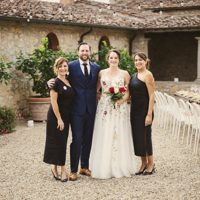

Notes from
the venues.
Places we know well, and what we have learned marrying couples in them.
Amalfi Coast Wedding PlannerLately
New from the journal.

- Caruso Belmond HotelAmalfi Coast17 November 2025

How to choose your Italian vendor team: a planner’s honest playbook10 October 2025 Mediterranean maximalism: from citrus hues to pattern-play tables10 October 2025
Mediterranean maximalism: from citrus hues to pattern-play tables10 October 2025- The Italian welcome party: turning arrival day into la dolce vita10 October 2025
- The Italian wedding feast: from aperitivo teatrale to late-night street food10 October 2025
 Amalfi Coast vs. Cinque Terre: two coastlines walk into your moodboardAmalfi Coast10 October 2025
Amalfi Coast vs. Cinque Terre: two coastlines walk into your moodboardAmalfi Coast10 October 2025